CODING AGENTS AS PIXEL WORLD MODELS
traex/GPT-6.1-Sol · 0165
点击播放 · 原生 RGB 像素
逐轮保存的候选
回放视频、检查图与代码变化。
每份候选均可单独播放。实际图片检查记录在下方工具轨迹中。
候选 01播放与检查图
点击播放 · 原生 RGB 像素

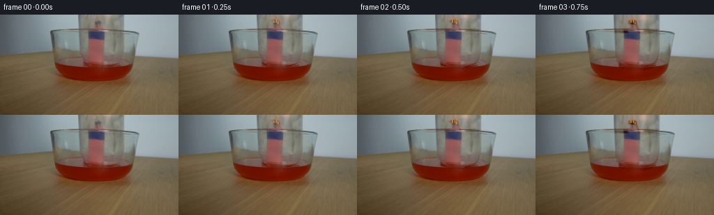
展开代码变化
--- 上一保存版本
+++ 本次保存版本
@@ -0,0 +1,144 @@
+from pathlib import Path
+import numpy as np
+from PIL import Image, ImageDraw, ImageFilter
+import cv2
+from scipy.ndimage import gaussian_filter, map_coordinates
+import artifact_io
+
+ROOT=Path(__file__).resolve().parent
+W,H=256,144
+source=np.array(Image.open(ROOT/'first_frame.png').convert('RGB'),dtype=np.float32)
+yy,xx=np.mgrid[:H,:W].astype(float)
+S=4
+
+def pathmask(fn, blur=.4):
+ im=Image.new('L',(W*S,H*S));d=ImageDraw.Draw(im)
+ class D:
+ def line(self,pts,fill=255,width=1):d.line([(int(x*S),int(y*S)) for x,y in pts],fill=fill,width=max(1,int(width*S)),joint='curve')
+ def poly(self,pts,fill=255):d.polygon([(int(x*S),int(y*S)) for x,y in pts],fill=fill)
+ def ellipse(self,box,fill=255,width=None):
+ b=tuple(int(q*S) for q in box)
+ if width is None:d.ellipse(b,fill=fill)
+ else:d.ellipse(b,outline=fill,width=max(1,int(width*S)))
+ fn(D())
+ a=np.asarray(im.resize((W,H),Image.Resampling.LANCZOS),float)/255
+ return gaussian_filter(a,blur) if blur else a
+
+jar=pathmask(lambda d:d.poly([(111.5,-10),(178,-10),(177.6,36),(176.1,57),(172.6,66),(166.8,71),(154,74),(131,75),(120.6,70),(115.1,60),(112.8,38)]),.55)
+# The fixed match holder remains fixed; only the optical layer of the glass moves.
+holder=pathmask(lambda d:d.poly([(133,8),(144,8),(147,19),(149,22),(149.8,69.5),(145,73),(123,72),(125.5,47),(126,22),(133,20)]),.8)
+# Obtain the unobstructed wall by continuing the two neighboring wall colors.
+wall=np.zeros_like(source)
+for y in range(H):
+ left=source[y,103:109].mean(axis=0);right=source[y,182:188].mean(axis=0)
+ frac=np.clip((np.arange(W)-106)/79,0,1)
+ wall[y]=left[None,:]*(1-frac[:,None])+right[None,:]*frac[:,None]
+base=source.copy()
+skywt=np.clip((22-yy)/3,0,1)*jar*(1-holder)
+base+=skywt[...,None]*(wall-source)
+# The rest of the clear jar overlaps the bowl; lift its gray optical absorption,
+# without moving the bowl, liquid, or matchstand.
+lowwt=jar*(1-np.clip((22-yy)/3,0,1))*np.clip((74-yy)/8,0,1)
+correction=np.array([12,18,21])[None,None,:]
+correction=correction*(1-.65*holder[...,None])
+base+=lowwt[...,None]*correction
+# Remove the old rounded lower lip and side highlights from the stationary plate.
+edge=pathmask(lambda d:(d.line([(112.1,0),(113.1,30),(114.2,51),(116.6,61),(121,68),(128,71)],width=2.5), d.line([(177.7,0),(177.4,33),(176.2,54),(173.7,63),(168.9,70)],width=2.5),d.line([(121,69),(132,74),(151,74),(166,71),(172,67)],width=2.1)),.25)
+# Do not erase the stationary back edge of the bowl, which crosses the jar.
+rim_protect=pathmask(lambda d:d.line([(73.3,24),(84,21.6),(104,21.5),(124,21.5),(147,22),(169,23),(188,25),(198,28)],width=2.0),.5)
+edge*=1-rim_protect
+# Inpainting here only interpolates neighboring pixels, not a learned synthesis.
+repaired=cv2.inpaint(np.clip(base,0,255).astype('uint8'),np.uint8(edge>.12)*255,4,cv2.INPAINT_TELEA).astype(float)
+base=base*(1-edge[...,None])+repaired*edge[...,None]
+# A sample-based optical residual makes transparent moving glass look like the source.
+optical=(source-base)*jar[...,None]
+# Force exact residual in the initial source region, avoiding alpha squared edges.
+base=source-optical
+
+# Jar optical sampling, subpixel motion at constant frame rate.
+def shift_optical(d):
+ coords=np.array([yy-d,xx])
+ out=np.stack([map_coordinates(optical[:,:,c],coords,order=1,mode='nearest') for c in range(3)],axis=-1)
+ # Glass below the outside water surface is seen through the red liquid.
+ front=np.clip((yy-73)/11,0,1)
+ out*= (1-.62*front[...,None])
+ return out
+
+def add_rgb(a, color, alpha):
+ return a*(1-alpha[...,None])+np.asarray(color)*alpha[...,None]
+
+frames=[]
+for i in range(20):
+ t=i/4
+ if i==0:
+ frames.append(source.astype(np.uint8));continue
+ # A controlled lowering over the first 1.7 seconds, then stationary glass.
+ p=np.clip(t/1.75,0,1)
+ smooth=p*p*(3-2*p)
+ down=14.6*smooth
+ a=base+shift_optical(down)
+ # Original bowl rim in front of the jar retains its location.
+ a=a*(1-.85*rim_protect[...,None])+source*(.85*rim_protect[...,None])
+ # Inverted closed end descends into the top edge of the locked-off frame.
+ top=-12.9+down
+ cap=pathmask(lambda d:d.ellipse((112.0,top-3.6,177.7,top+4.2),fill=255),.55)
+ capedge=pathmask(lambda d:d.ellipse((112.0,top-3.6,177.7,top+4.2),width=.65),.55)
+ a=add_rgb(a,[135,143,139],cap*.08*smooth)
+ a=add_rgb(a,[92,105,105],capedge*.43*smooth)
+ highlight=pathmask(lambda d:d.line([(118,top-1.1),(132,top-2.2),(148,top-1.9),(162,top-1.1)],width=.65),.65)
+ a=add_rgb(a,[208,219,216],highlight*.34*smooth)
+ # When the rim seals underwater, air heats briefly and then the flame dies.
+ seal=np.clip((t-1.25)/.8,0,1)
+ height=11.3*(1-np.exp(-max(0,t-2.1)/1.3))
+ level=71.8-height
+ # Internal liquid has a shallow elliptical surface, and the front external
+ # water remains in front of it. Its height grows only after extinguishing.
+ if height>0:
+ left=118.7;right=174.7;cx=(left+right)/2;rx=(right-left)/2
+ surface_y=level+2.5*np.sqrt(np.clip(1-((xx-cx)/rx)**2,0,1))
+ inside=np.clip((xx-left)/1.2,0,1)*np.clip((right-xx)/1.2,0,1)
+ wet=inside*np.clip((yy-surface_y)/1.1,0,1)*np.clip((78-yy)/3,0,1)
+ # Light-red transmitted liquid, not opaque paint.
+ watercol=np.stack([a[:,:,0]*.96+6,a[:,:,1]*.57+4,a[:,:,2]*.51+2],axis=-1)
+ a=a*(1-wet[...,None]*.74)+watercol*wet[...,None]*.74
+ ellipse=pathmask(lambda d:d.ellipse((left,level-2.5,right,level+2.5),fill=255),.6)
+ a=add_rgb(a,[143,67,55],ellipse*.24*np.clip(height/3,0,1))
+ # Meniscus on front edge, and vertical saturated part of the water.
+ men=pathmask(lambda d:d.line([(left,level),(124,level+1.7),(137,level+2.5),(155,level+2.3),(167,level+1.4),(right,level)],width=.65),.45)
+ a=add_rgb(a,[153,86,73],men*.26)
+ # Small short-lived realistic flame tongues on the match bundle.
+ strength=(.9+.1*np.sin(t*13))*(1-np.clip((t-1.30)/.75,0,1))
+ if strength>0:
+ flame=np.zeros((H*S,W*S,4),dtype=np.uint8)
+ lay=Image.new('RGBA',(W*S,H*S));dr=ImageDraw.Draw(lay)
+ for k,(fx,fy) in enumerate([(137.1,11.7),(140.7,11.3),(143.0,13.2)]):
+ h=(6.2+1.9*np.sin(t*17+k*2.6))*strength
+ bend=.6*np.sin(t*18+k)
+ points=[(fx-1.1,fy),(fx-1.2,fy-h*.35),(fx+bend-.15,fy-h),(fx+.75,fy-h*.40),(fx+1,fy)]
+ dr.polygon([(int(x*S),int(y*S)) for x,y in points],fill=(244,121,24,int(190*strength)))
+ inner=[(fx-.5,fy),(fx+bend*.2,fy-h*.65),(fx+.5,fy)]
+ dr.polygon([(int(x*S),int(y*S)) for x,y in inner],fill=(254,211,93,int(210*strength)))
+ lay=lay.resize((W,H),Image.Resampling.LANCZOS).filter(ImageFilter.GaussianBlur(.43))
+ arr=np.asarray(lay,float);alpha=arr[:,:,3]/255
+ glow=gaussian_filter(alpha,2.0)*.08
+ a+=glow[:,:,None]*np.array([85,36,4])[None,None,:]
+ a=a*(1-alpha[:,:,None])+arr[:,:,:3]*alpha[:,:,None]
+ # Faint extinguishing smoke curls remain trapped inside the glass.
+ smoke_strength=np.clip((t-1.7)/.4,0,1)*np.exp(-max(0,t-2.1)/1.25)*.09
+ if smoke_strength>0:
+ smoke=np.zeros((H,W))
+ for k in range(3):
+ pts=[]
+ for v in np.linspace(0,1,23):
+ y=11-v*min(9,2+(t-1.7)*10)
+ x=139+k+1.5*np.sin(v*5-t*3+k*.7)*v
+ pts.append((x,y))
+ smoke+=pathmask(lambda d,pts=pts:d.line(pts,width=.85),.9)
+ a=add_rgb(a,[155,152,145],np.minimum(smoke*.5,1)*smoke_strength)
+ # Only a tiny oscillation from the lowering at the liquid/glass interface.
+ if 0.6<t<2.35:
+ ripple=pathmask(lambda d:d.ellipse((116-down*.06,70+down*.16,176+down*.05,75+down*.16),width=.5),.7)
+ a=add_rgb(a,[165,89,65],ripple*.12*np.sin((t-.6)/1.75*np.pi))
+ frames.append(np.clip(a,0,255).astype(np.uint8))
+frames=np.array(frames,dtype=np.uint8)
+artifact_io.save(frames,ROOT)
候选 02播放与检查图
点击播放 · 原生 RGB 像素
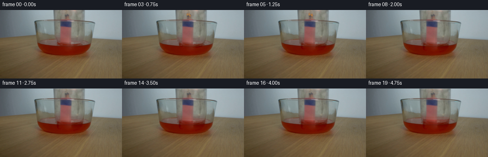
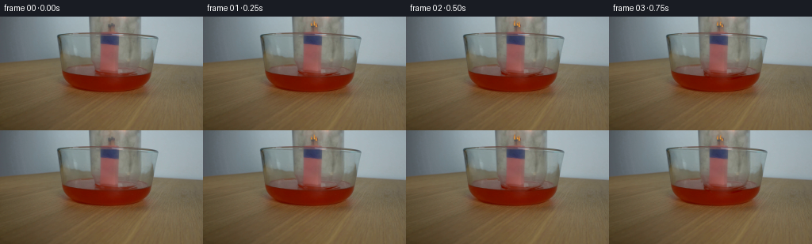
展开代码变化
--- 上一保存版本
+++ 本次保存版本
@@ -40,7 +40,7 @@
# without moving the bowl, liquid, or matchstand.
lowwt=jar*(1-np.clip((22-yy)/3,0,1))*np.clip((74-yy)/8,0,1)
correction=np.array([12,18,21])[None,None,:]
-correction=correction*(1-.65*holder[...,None])
+correction=correction*(1-holder[...,None])
base+=lowwt[...,None]*correction
# Remove the old rounded lower lip and side highlights from the stationary plate.
edge=pathmask(lambda d:(d.line([(112.1,0),(113.1,30),(114.2,51),(116.6,61),(121,68),(128,71)],width=2.5), d.line([(177.7,0),(177.4,33),(176.2,54),(173.7,63),(168.9,70)],width=2.5),d.line([(121,69),(132,74),(151,74),(166,71),(172,67)],width=2.1)),.25)
@@ -57,11 +57,14 @@
# Jar optical sampling, subpixel motion at constant frame rate.
def shift_optical(d):
- coords=np.array([yy-d,xx])
+ u=np.clip((yy-40)/(34+d),0,1)
+ coords=np.array([yy-d*u*u*(3-2*u),xx])
out=np.stack([map_coordinates(optical[:,:,c],coords,order=1,mode='nearest') for c in range(3)],axis=-1)
# Glass below the outside water surface is seen through the red liquid.
front=np.clip((yy-73)/11,0,1)
out*= (1-.62*front[...,None])
+ cap_top=-12.9+d
+ out*=np.clip((yy-cap_top+2.5)/1.6,0,1)[...,None]
return out
def add_rgb(a, color, alpha):
候选 03播放与检查图
点击播放 · 原生 RGB 像素
展开代码变化
--- 上一保存版本
+++ 本次保存版本
@@ -51,14 +51,14 @@
repaired=cv2.inpaint(np.clip(base,0,255).astype('uint8'),np.uint8(edge>.12)*255,4,cv2.INPAINT_TELEA).astype(float)
base=base*(1-edge[...,None])+repaired*edge[...,None]
# A sample-based optical residual makes transparent moving glass look like the source.
-optical=(source-base)*jar[...,None]
+optical=(source-base)*jar[...,None]*(1-holder[...,None])
# Force exact residual in the initial source region, avoiding alpha squared edges.
base=source-optical
# Jar optical sampling, subpixel motion at constant frame rate.
def shift_optical(d):
u=np.clip((yy-40)/(34+d),0,1)
- coords=np.array([yy-d*u*u*(3-2*u),xx])
+ coords=np.array([yy-d,xx])
out=np.stack([map_coordinates(optical[:,:,c],coords,order=1,mode='nearest') for c in range(3)],axis=-1)
# Glass below the outside water surface is seen through the red liquid.
front=np.clip((yy-73)/11,0,1)
@@ -78,7 +78,7 @@
# A controlled lowering over the first 1.7 seconds, then stationary glass.
p=np.clip(t/1.75,0,1)
smooth=p*p*(3-2*p)
- down=14.6*smooth
+ down=16.4*smooth
a=base+shift_optical(down)
# Original bowl rim in front of the jar retains its location.
a=a*(1-.85*rim_protect[...,None])+source*(.85*rim_protect[...,None])
候选 04播放与检查图
点击播放 · 原生 RGB 像素

展开代码变化
代码未变化；重新保存了产物。
候选 05播放与检查图
点击播放 · 原生 RGB 像素
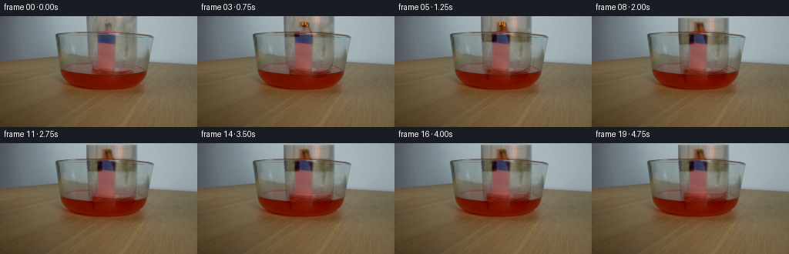
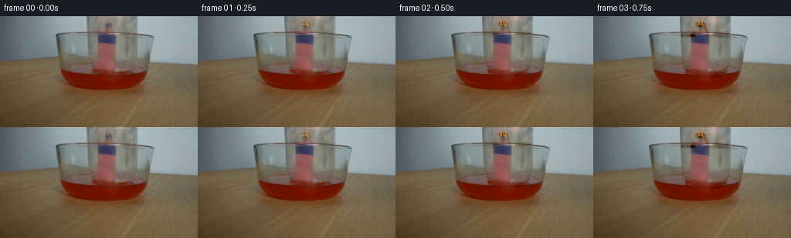
展开代码变化
--- 上一保存版本
+++ 本次保存版本
@@ -51,14 +51,14 @@
repaired=cv2.inpaint(np.clip(base,0,255).astype('uint8'),np.uint8(edge>.12)*255,4,cv2.INPAINT_TELEA).astype(float)
base=base*(1-edge[...,None])+repaired*edge[...,None]
# A sample-based optical residual makes transparent moving glass look like the source.
-optical=(source-base)*jar[...,None]*(1-holder[...,None])
+optical=(source-base)*jar[...,None]
# Force exact residual in the initial source region, avoiding alpha squared edges.
base=source-optical
# Jar optical sampling, subpixel motion at constant frame rate.
def shift_optical(d):
u=np.clip((yy-40)/(34+d),0,1)
- coords=np.array([yy-d,xx])
+ coords=np.array([yy-d*u*u*(3-2*u),xx])
out=np.stack([map_coordinates(optical[:,:,c],coords,order=1,mode='nearest') for c in range(3)],axis=-1)
# Glass below the outside water surface is seen through the red liquid.
front=np.clip((yy-73)/11,0,1)
候选 06播放与检查图
可观测工具轨迹
实际执行的命令与返回图片。
命令 1exit 0
/bin/bash -lc "ls -la && cat prompt.txt && printf '\\n---RULES---\\n' && cat GENERATION_RULES.md"
命令 2exit 0
/bin/bash -lc "cat artifact_io.py && python - <<'PY'
from PIL import Image
im=Image.open('first_frame.png'); im.resize((1024,576)).save('.tmp/large.png')
PY"命令 3exit 0
/bin/bash -lc "python - <<'PY'
from PIL import Image
im=Image.open('first_frame.png'); im.crop((105,0,185,80)).resize((640,640)).save('.tmp/crop.png')
PY"命令 4exit 0
/bin/bash -lc "python - <<'PY'
from PIL import Image
im=Image.open('first_frame.png'); im.resize((1024,576),Image.Resampling.NEAREST).save('.tmp/nearest.png')
import importlib.util
for p in ['cv2','scipy','numpy','PIL']:
print(p, bool(importlib.util.find_spec(p)))
PY"命令 5exit 0
/bin/bash -lc "python - <<'PY'
from PIL import Image,ImageDraw
im=Image.open('first_frame.png').resize((1024,576));d=ImageDraw.Draw(im)
for x in range(0,256,10):
d.line((x*4,0,x*4,576),fill=(210,210,210),width=1);d.text((x*4,1),str(x),fill='black')
for y in range(0,144,10):
d.line((0,y*4,1024,y*4),fill=(210,210,210),width=1);d.text((1,y*4),str(y),fill='black')
im.save('.tmp/grid.png')
PY"命令 6exit 0
/bin/bash -lc "python - <<'PY'
from PIL import Image
im=Image.open('first_frame.png')
for pos in [(100,10),(112,10),(119,10),(140,3),(140,12),(129,40),(144,55),(123,66),(168,68),(137,84),(177,81),(122,79),(151,48),(179,48)]:print(pos,im.getpixel(pos))
PY"命令 7exit 0
/bin/bash -lc "cat > generate.py <<'PY'
from pathlib import Path
import numpy as np
from PIL import Image, ImageDraw, ImageFilter
import cv2
from scipy.ndimage import gaussian_filter, map_coordinates
import artifact_io
ROOT=Path(__file__).resolve().parent
W,H=256,144
source=np.array(Image.open(ROOT/'first_frame.png').convert('RGB'),dtype=np.float32)
yy,xx=np.mgrid[:H,:W].astype(float)
S=4
def pathmask(fn, blur=.4):
im=Image.new('L',(W*S,H*S));d=ImageDraw.Draw(im)
class D:
def line(self,pts,fill=255,width=1):d.line([(int(x*S),int(y*S)) for x,y in pts],fill=fill,width=max(1,int(width*S)),joint='curve')
def poly(self,pts,fill=255):d.polygon([(int(x*S),int(y*S)) for x,y in pts],fill=fill)
def ellipse(self,box,fill=255,width=None):
b=tuple(int(q*S) for q in box)
if width is None:d.ellipse(b,fill=fill)
else:d.ellipse(b,outline=fill,width=max(1,int(width*S)))
fn(D())
a=np.asarray(im.resize((W,H),Image.Resampling.LANCZOS),float)/255
return gaussian_filter(a,blur) if blur else a
jar=pathmask(lambda d:d.poly([(111.5,-10),(178,-10),(177.6,36),(176.1,57),(172.6,66),(166.8,71),(154,74),(131,75),(120.6,70),(115.1,60),(112.8,38)]),.55)
# The fixed match holder remains fixed; only the optical layer of the glass moves.
holder=pathmask(lambda d:d.poly([(133,8),(144,8),(147,19),(149,22),(149.8,69.5),(145,73),(123,72),(125.5,47),(126,22),(133,20)]),.8)
# Obtain the unobstructed wall by continuing the two neighboring wall colors.
wall=np.zeros_like(source)
for y in range(H):
left=source[y,103:109].mean(axis=0);right=source[y,182:188].mean(axis=0)
frac=np.clip((np.arange(W)-106)/79,0,1)
wall[y]=left[None,:]*(1-frac[:,None])+right[None,:]*frac[:,None]
base=source.copy()
skywt=np.clip((22-yy)/3,0,1)*jar*(1-holder)
base+=skywt[...,None]*(wall-source)
# The rest of the clear jar overlaps the bowl; lift its gray optical absorption,
# without moving the bowl, liquid, or matchstand.
lowwt=jar*(1-np.clip((22-yy)/3,0,1))*np.clip((74-yy)/8,0,1)
correction=np.array([12,18,21])[None,None,:]
correction=correction*(1-.65*holder[...,None])
base+=lowwt[...,None]*correction
# Remove the old rounded lower lip and side highlights from the stationary plate.
edge=pathmask(lambda d:(d.line([(112.1,0),(113.1,30),(114.2,51),(116.6,61),(121,68),(128,71)],width=2.5), d.line([(177.7,0),(177.4,33),(176.2,54),(173.7,63),(168.9,70)],width=2.5),d.line([(121,69),(132,74),(151,74),(166,71),(172,67)],width=2.1)),.25)
# Do not erase the stationary back edge of the bowl, which crosses the jar.
rim_protect=pathmask(lambda d:d.line([(73.3,24),(84,21.6),(104,21.5),(124,21.5),(147,22),(169,23),(188,25),(198,28)],width=2.0),.5)
edge*=1-rim_protect
# Inpainting here only interpolates neighboring pixels, not a learned synthesis.
repaired=cv2.inpaint(np.clip(base,0,255).astype('uint8'),np.uint8(edge>.12)*255,4,cv2.INPAINT_TELEA).astype(float)
base=base*(1-edge[...,None])+repaired*edge[...,None]
# A sample-based optical residual makes transparent moving glass look like the source.
optical=(source-base)*jar[...,None]
# Force exact residual in the initial source region, avoiding alpha squared edges.
base=source-optical
# Jar optical sampling, subpixel motion at constant frame rate.
def shift_optical(d):
coords=np.array([yy-d,xx])
out=np.stack([map_coordinates(optical[:,:,c],coords,order=1,mode='nearest') for c in range(3)],axis=-1)
# Glass below the outside water surface is seen through the red liquid.
front=np.clip((yy-73)/11,0,1)
out*= (1-.62*front[...,None])
return out
def add_rgb(a, color, alpha):
return a*(1-alpha[...,None])+np.asarray(color)*alpha[...,None]
frames=[]
for i in range(20):
t=i/4
if i==0:
frames.append(source.astype(np.uint8));continue
# A controlled lowering over the first 1.7 seconds, then stationary glass.
p=np.clip(t/1.75,0,1)
smooth=p*p*(3-2*p)
down=14.6*smooth
a=base+shift_optical(down)
# Original bowl rim in front of the jar retains its location.
a=a*(1-.85*rim_protect[...,None])+source*(.85*rim_protect[...,None])
# Inverted closed end descends into the top edge of the locked-off frame.
top=-12.9+down
cap=pathmask(lambda d:d.ellipse((112.0,top-3.6,177.7,top+4.2),fill=255),.55)
capedge=pathmask(lambda d:d.ellipse((112.0,top-3.6,177.7,top+4.2),width=.65),.55)
a=add_rgb(a,[135,143,139],cap*.08*smooth)
a=add_rgb(a,[92,105,105],capedge*.43*smooth)
highlight=pathmask(lambda d:d.line([(118,top-1.1),(132,top-2.2),(148,top-1.9),(162,top-1.1)],width=.65),.65)
a=add_rgb(a,[208,219,216],highlight*.34*smooth)
# When the rim seals underwater, air heats briefly and then the flame dies.
seal=np.clip((t-1.25)/.8,0,1)
height=11.3*(1-np.exp(-max(0,t-2.1)/1.3))
level=71.8-height
# Internal liquid has a shallow elliptical surface, and the front external
# water remains in front of it. Its height grows only after extinguishing.
if height>0:
left=118.7;right=174.7;cx=(left+right)/2;rx=(right-left)/2
surface_y=level+2.5*np.sqrt(np.clip(1-((xx-cx)/rx)**2,0,1))
inside=np.clip((xx-left)/1.2,0,1)*np.clip((right-xx)/1.2,0,1)
wet=inside*np.clip((yy-surface_y)/1.1,0,1)*np.clip((78-yy)/3,0,1)
# Light-red transmitted liquid, not opaque paint.
watercol=np.stack([a[:,:,0]*.96+6,a[:,:,1]*.57+4,a[:,:,2]*.51+2],axis=-1)
a=a*(1-wet[...,None]*.74)+watercol*wet[...,None]*.74
ellipse=pathmask(lambda d:d.ellipse((left,level-2.5,right,level+2.5),fill=255),.6)
a=add_rgb(a,[143,67,55],ellipse*.24*np.clip(height/3,0,1))
# Meniscus on front edge, and vertical saturated part of the water.
men=pathmask(lambda d:d.line([(left,level),(124,level+1.7),(137,level+2.5),(155,level+2.3),(167,level+1.4),(right,level)],width=.65),.45)
a=add_rgb(a,[153,86,73],men*.26)
# Small short-lived realistic flame tongues on the match bundle.
strength=(.9+.1*np.sin(t*13))*(1-np.clip((t-1.30)/.75,0,1))
if strength>0:
flame=np.zeros((H*S,W*S,4),dtype=np.uint8)
lay=Image.new('RGBA',(W*S,H*S));dr=ImageDraw.Draw(lay)
for k,(fx,fy) in enumerate([(137.1,11.7),(140.7,11.3),(143.0,13.2)]):
h=(6.2+1.9*np.sin(t*17+k*2.6))*strength
bend=.6*np.sin(t*18+k)
points=[(fx-1.1,fy),(fx-1.2,fy-h*.35),(fx+bend-.15,fy-h),(fx+.75,fy-h*.40),(fx+1,fy)]
dr.polygon([(int(x*S),int(y*S)) for x,y in points],fill=(244,121,24,int(190*strength)))
inner=[(fx-.5,fy),(fx+bend*.2,fy-h*.65),(fx+.5,fy)]
dr.polygon([(int(x*S),int(y*S)) for x,y in inner],fill=(254,211,93,int(210*strength)))
lay=lay.resize((W,H),Image.Resampling.LANCZOS).filter(ImageFilter.GaussianBlur(.43))
arr=np.asarray(lay,float);alpha=arr[:,:,3]/255
glow=gaussian_filter(alpha,2.0)*.08
a+=glow[:,:,None]*np.array([85,36,4])[None,None,:]
a=a*(1-alpha[:,:,None])+arr[:,:,:3]*alpha[:,:,None]
# Faint extinguishing smoke curls remain trapped inside the glass.
smoke_strength=np.clip((t-1.7)/.4,0,1)*np.exp(-max(0,t-2.1)/1.25)*.09
if smoke_strength>0:
smoke=np.zeros((H,W))
for k in range(3):
pts=[]
for v in np.linspace(0,1,23):
y=11-v*min(9,2+(t-1.7)*10)
x=139+k+1.5*np.sin(v*5-t*3+k*.7)*v
pts.append((x,y))
smoke+=pathmask(lambda d,pts=pts:d.line(pts,width=.85),.9)
a=add_rgb(a,[155,152,145],np.minimum(smoke*.5,1)*smoke_strength)
# Only a tiny oscillation from the lowering at the liquid/glass interface.
if 0.6<t<2.35:
ripple=pathmask(lambda d:d.ellipse((116-down*.06,70+down*.16,176+down*.05,75+down*.16),width=.5),.7)
a=add_rgb(a,[165,89,65],ripple*.12*np.sin((t-.6)/1.75*np.pi))
frames.append(np.clip(a,0,255).astype(np.uint8))
frames=np.array(frames,dtype=np.uint8)
artifact_io.save(frames,ROOT)
PY
python generate.py"命令 8exit 0
/bin/bash -lc "python - <<'PY'
from PIL import Image
for i in [1,5,10,19]:
Image.open(f'frames/{i:02d}.png').resize((1024,576)).save(f'.tmp/out{i}.png')
PY"命令 9exit 0
/bin/bash -lc "python - <<'PY'
p='generate.py'
s=open(p).read().replace('correction=correction*(1-.65*holder[...,None])','correction=correction*(1-holder[...,None])')
s=s.replace('coords=np.array([yy-d,xx])','u=np.clip((yy-40)/(34+d),0,1)\\n coords=np.array([yy-d*u*u*(3-2*u),xx])')
s=s.replace(\"out*= (1-.62*front[...,None])\",\"out*= (1-.62*front[...,None])\\n cap_top=-12.9+d\\n out*=np.clip((yy-cap_top+2.5)/1.6,0,1)[...,None]\")
open(p,'w').write(s)
PY
python generate.py
python - <<'PY'
from PIL import Image
Image.open('frames/19.png').resize((1024,576)).save('.tmp/revised.png')
PY"命令 10exit 0
/bin/bash -lc "cp generate.py .tmp/v2.py && python - <<'PY'
p='generate.py';s=open(p).read().replace('down=14.6*smooth','down=16.4*smooth');s=s.replace('coords=np.array([yy-d*u*u*(3-2*u),xx])','coords=np.array([yy-d,xx])');s=s.replace('optical=(source-base)*jar[...,None]','optical=(source-base)*jar[...,None]*(1-holder[...,None])');open(p,'w').write(s)
PY
python generate.py
python - <<'PY'
from PIL import Image
Image.open('frames/19.png').resize((1024,576)).save('.tmp/revised3.png')
PY"命令 11exit 0
/bin/bash -lc "cp .tmp/v2.py generate.py
python - <<'PY'
p='generate.py';s=open(p).read().replace('down=14.6*smooth','down=16.4*smooth');open(p,'w').write(s)
PY
python generate.py
python - <<'PY'
from PIL import Image
import numpy as np
p=np.load('pixels.npz')['pixels']
im=np.array(Image.open('first_frame.png'))
packed=(im[:,:,0].astype(np.uint32)<<16)|(im[:,:,1].astype(np.uint32)<<8)|im[:,:,2].astype(np.uint32)
assert np.array_equal(p[:,:,0],packed)
assert p.shape==(144,256,20)
print('Validated 20 RGB frames; frame 00 exactly matches first_frame.png.')
PY"视觉工具实际返回图片 1
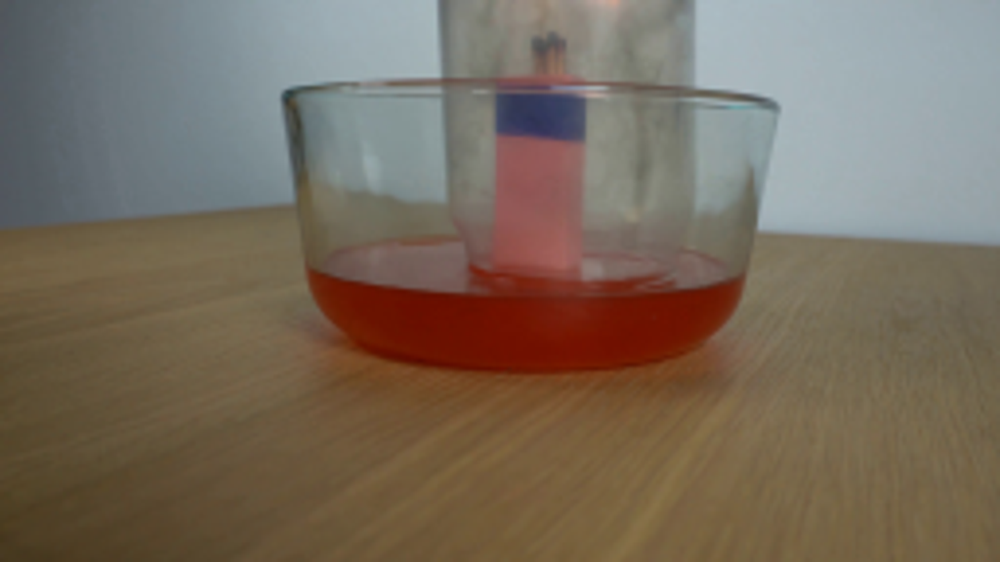
视觉工具实际返回图片 2
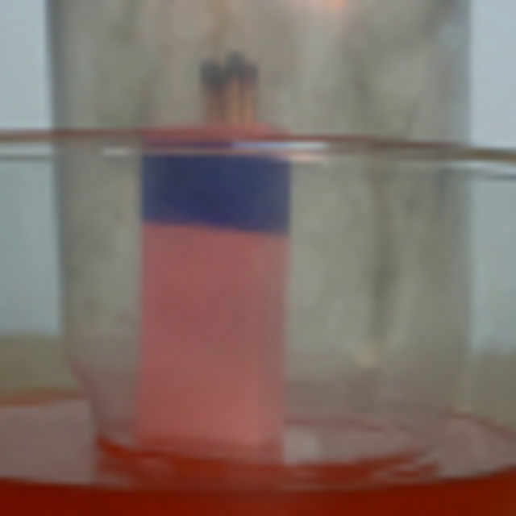
视觉工具实际返回图片 3
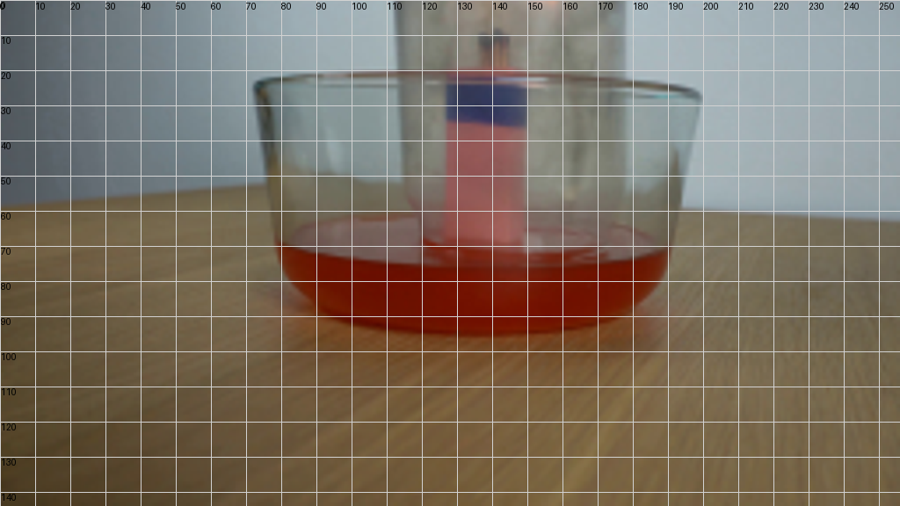
视觉工具实际返回图片 4
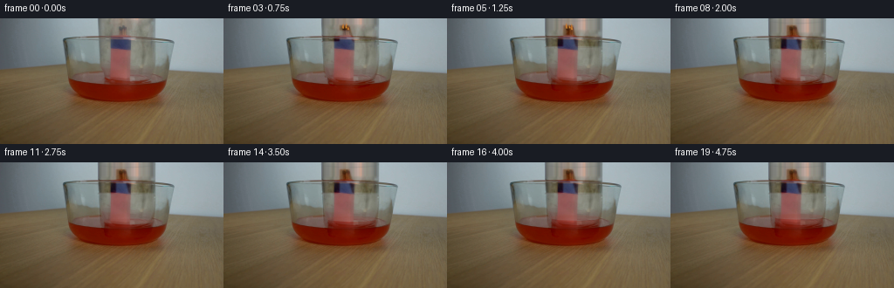
视觉工具实际返回图片 5
视觉工具实际返回图片 6
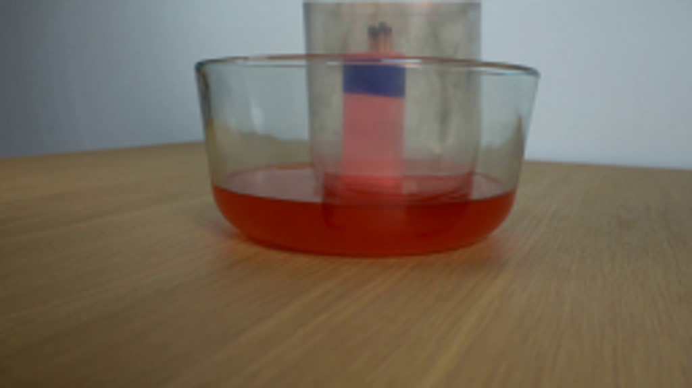
视觉工具实际返回图片 7
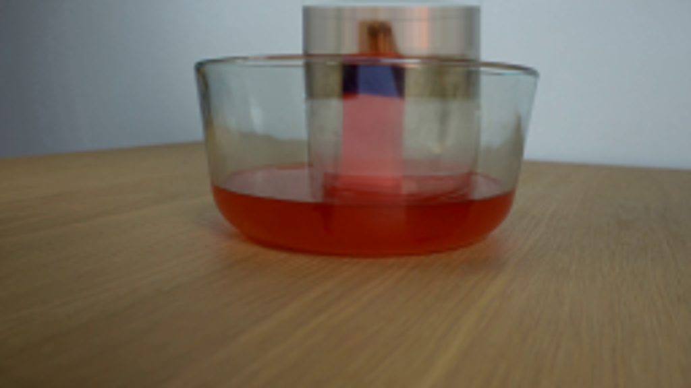
保存候选 6 份；完成命令 11 次；可验证图片返回 7 张。原始 API 响应与完整日志保留在本地。